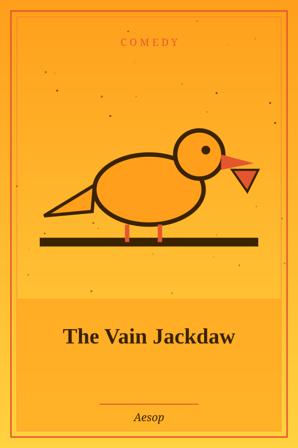
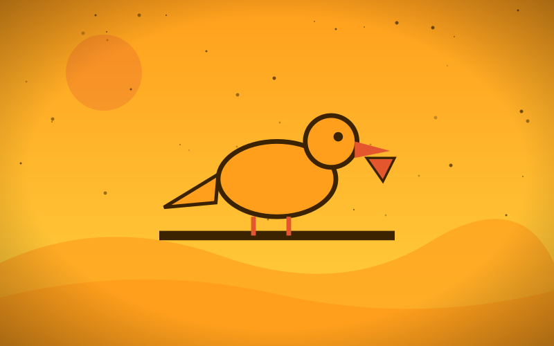

The Girl and the Glass Mountain
Genre: Fairy Tale
Synopsis
To save her village, a girl must climb a mountain no one has ever crossed.
Chapter 1: The First Step

The mountain was smooth as a mirror, and every climber slid back to the bottom. But the river behind the village had dried, and there was no other water.
Ada wrapped her boots in wool, carried a pouch of sand, and sprinkled it with every step.
Halfway up, she looked down and saw her whole village looking up, and she began to climb as if the sky itself were pulling her.